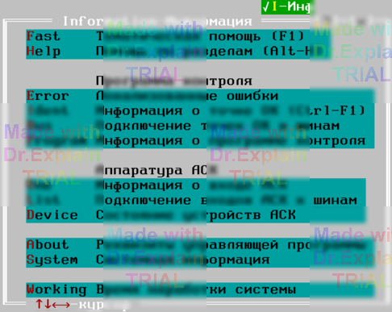
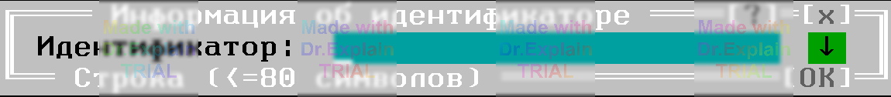

6. Меню Info - информация выполнения
Команда Alt-I (Information - информация) вызывает меню Info, см. рисунок 1, позволяющее получить информацию, полезную при выполнении ПК и тестов, а также при изучении ПОАСК.

6.1 Пункты "Тематическая помощь" и "Помощь по разделам"
Позволяют вызвать файловую систему помощи ПОАСК.
6.2 Команда Info/Error "Локализованные ошибки"
В процессе выполнения команды ПК, оперирующей ССИРТ (ПЭ, ПР, ЭТ, РТ, СИ или ПИ) открывает специальное окно, в котором выводит ССИРТ текущей команды, с показанными в нем локализованными ошибками. Команда позволяет оператору при слишком затянувшемся процессе локализации проанализировать найденные ошибки и, при необходимости, предпринять какие-то действия, например, правильно подключить ОК.
6.3 Пункт Info/Ident "Информация о точке ОК"
Горячаее сочетание клавиш Ctrl+F1 позволяет получить всю информацию о точке ОК, определенную в оттранслированной ПК. Появляется окно, в строке ввода которого нужно ввести интересующий идентификатор, см. рисунок 2.

В качестве начального значения при вводе берется идентификатор, на котором (в любом месте) расположен курсор в активном текстовом окне. Вы можете отредактировать это значение, заменить его новым значением, или же воспользоваться окном "История", чтобы выбрать на редактирование один из ранее введенных идентификаторов.
После ввода идентификатора открывается специальное окно "Информация об идентификаторе". С помощью этой команды при обнаружении ошибок в ОК вы сможете получить всю определенную в ПК информацию по интересующим точкам ОК, а также, если ПК запущена на выполнение, информацию о подключениях этих точек к шинам. Идентификаторы точек ОК выводятся в протокол выполнения при обнаружении ошибки в ОК. Установите курсор на интересующий вас идентификатор и дайте команду Ctrl+F1.
Команда Ctrl+F1 может также использоваться для получения:
- Информации о цепи или синониме, определенных в ПК. Установите курсор на интересующее вас обозначение и введите Ctrl-F1;
- описания команды ЯПК (помощи). Установите курсор на мнемонику команды и введите Ctrl-F1.
Секция ЦЕПИ
Определяется сразу после КЦ (без «параметров»).
Формат строки цепи
имя_цепи[/Nподципы] = точка,[,точка...] , (R);
- имя_цепи — идентификатор цепи.
- Nподцепи (опц.) — номер подцепи той же цепи.
- точка — метка точки ОК (из РМ).
- R — сопротивление связи этой подцепи (Ом, кОм…).
Правила
- Одна точка не может входить в две разные цепи.
- В пределах одной цепи любая пара подцепей имеет не более одной общей точки.
- Подцепи с одним именем должны быть связаны: из любой точки любой подцепи можно пройти через другие подцепи к любой.
Параметры по умолчанию
Если в цепи не указан R, берётся значение из строки
ПАРАМЕТРЫ = R; //R — значение по умолчанию
Расчёт эквивалентного сопротивления
- Для любой пары точек внутри одной подцепи сопротивление = указанному R.
- Неописанные связи считаются бесконечными (разомкнутыми).
- Учитываются все активные цепи и точки, подключённые любыми командами ПК.
Пример
1000 КЦ ЦЕПИ ПАРАМЕТРЫ = 0.1Ом; 1/1 = X1,X2; // связь X1–X2: 0.1 Ом 1/2 = X2,X3,(1кОм); // связь X2–X3: 1 кОм 2 = X4,X5,(200Ом); // в цепи 2 единственная подцепь
После этого команда контроля, например
ПЭ или СИ, при измерении сопротивления
между шинами, к которым подключены X1 и X3, выдаст эквивалент ≈ 90.9 Ом.
Когда применяется
- Отладка реакций АСК на ошибочные/краевые значения без реального подключения.
- Проверка логики программ контроля перед выходом на стенд.
- Обязательно отключить эмуляцию ошибок/сбоев («Без ошибок, сбоев»).